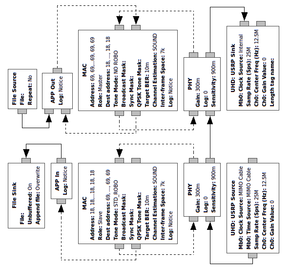

IEEE 1901 is a standard for high speed communication protocol via electric powerlines. The aim of this project is to provide an open source software implementation of IEEE 1901 physical layer. The software can then be used in software-defined radio (SDR) systems.
Gr-plc is a C++ implementation of IEEE 1901, designed to work in GNU Radio. GNU Radio is a free software development toolkit that provides signal processing blocks to implement SDR and signal-processing systems. The system was tested using Ettus USRP N210 and the LFRX and LFTX daughterboards.
The gr-plc module includes the following GNU Radio blocks:
- PHY Rx - receives IEEE 1901 frames
- PHY Tx - transmits IEEE 1901 frame
- PHY - an hierarchy block that includes the PHY In and PHY Out
- MAC - a simplified IEEE 1901 MAC layer
- APP In - a simple APP layer sink
- APP Out - a simple APP layer source
The important blocks are the PHY Rx and PHY Tx which contain the actual implementation of the IEEE 1901 physical layer. The PHY Rx includes the following:
- Frame detection and alignment algorithm
- Turbo decoder (incompatible with IEEE 1901)
- Several channel estimation methods
- Support for IEEE 1901 ROBO Modes: Standard ROBO, High-Speed ROBO and Mini ROBO
- Support for IEEE 1901 modulation types: BPSK, QPSK, 8-QAM, 16-QAM, 64-QAM, 256-QAM, 1024-QAM and 4096-QAM
- Adaptive bit loading algorithm
- Noise power spectral density estimation capability
The MAC block implements a simplified IEEE 1901 MAC layer and performs master-slave channel access (see More Details below).
Installation
Please see the project github page.
Usage
A typical two-transceiver flow graph is given in examples/plc.grc and is illustrated below:

The top part is the master station transceiver, and the bottom part is the slave station transceiver. The master station includes a file source that feeds the APP Out block with a continuous bit stream. The data is processed through the MAC and PHY blocks and then goes to the USRP block. The USRP block sends the signal to an actual USRP hardware through the Ethernet port. The USRP hardware is connected to the powerline.
The powerline is also connected to another USRP hardware, representing the slave station. The USRP sends the data through the same Ethernet port to the slave station USRP block shown in the bottom part of Figure 3.8. Samples from the USRP block are processed through the PHY and MAC blocks and eventually saved to a file through the APP In block.
The two USRP physical devices are paired using a special MIMO cable. This connection synchronizes the two USPRs internal oscillators to avoid a carrier frequency offset.
The return path, from the slave to the master, is not going through the USRP blocks. Instead, the slave PHY block output is fed directly to the master station PHY block.
Blocks Parameters
Several parameters in the MAC block are easily configurable. The parameters are described as follows:
- Role: The parameter sets whether a block is a master or a slave.
- Address: The parameter sets the station address. This value is used when the MAC frame is constructed.
- Dest Address: The parameter sets the destination station address. This value is used when the MAC frame is formed.
- Tone Mode: The parameter sets the tone mode for the station: Standard ROBO, High-Speed ROBO, Mini ROBO or no ROBO mode which uses the negotiated tone map.
- Broadcast Mask: The parameter is a mask of 2048 bits which sets the default tone mask.
- Sync Mask: The parameter is a mask of 256 bits which sets the tone mask for the preamble SYNCP and SYNCM symbols.
- QPSK Mask: The parameter is a mask of 2048 bits which determines which carriers should be forced to QPSK modulation during the bit loading calculation.
- Target BER: The parameter sets the target BER for the bit loading calculation.
- Channel Estimation: The parameter sets the channel estimation method used by the station.
- Inter-frame Space: The parameter sets the minimum space between two adjacent transmitted frames.
The PHY block parameters are described as follow:
- Sensitivity: The parameter corresponds to the preamble detection threshold.
- Gain: The parameter controls the transmitted signal gain.
NOTE: when running the flow graph inside GNU Radio Companion, make sure that the Log parameter is set to "Notice" in all blocks. Otherwise, GRC will become unresponsive as the output window is filled with trace information
Demo
Gr-plc has been used to research the feasibility of in-vechicle powerline communication. A video demonstrating gr-plc experimentation in a car is shown below.
Setup:
- Car model: 2006 Pontiac Solstice
- Communication between cigarette lighter to front light
- 512 OFDM carriers between 6.25MHz to 18.75MHz, -80 dBm/Hz PSD
- Front-end equipment: 2 Ettus USRP N210 with LFRX/LFTX, 2 bias tees to block DC component, amplifier in the transmitter
- PC running GNU Radio with gr-plc
<iframe width="560" height="315" src="https://www.youtube.com/embed/SNo6mBinul0" frameborder="0" allowfullscreen></iframe>More Details
A more detailed explanation of the parameters and the algorithms used is given in the thesis "In-vehicle powerline communication using software-defined radio": https://open.library.ubc.ca/collections/ubctheses/24/items/1.0307515